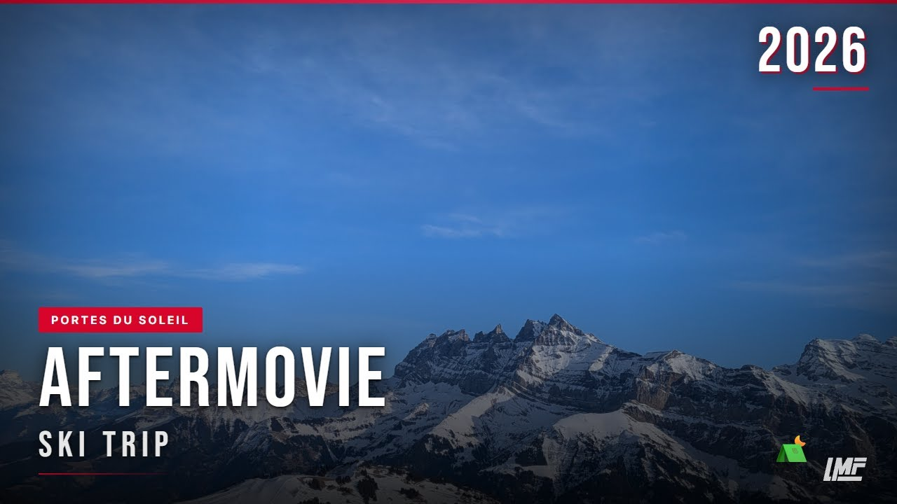
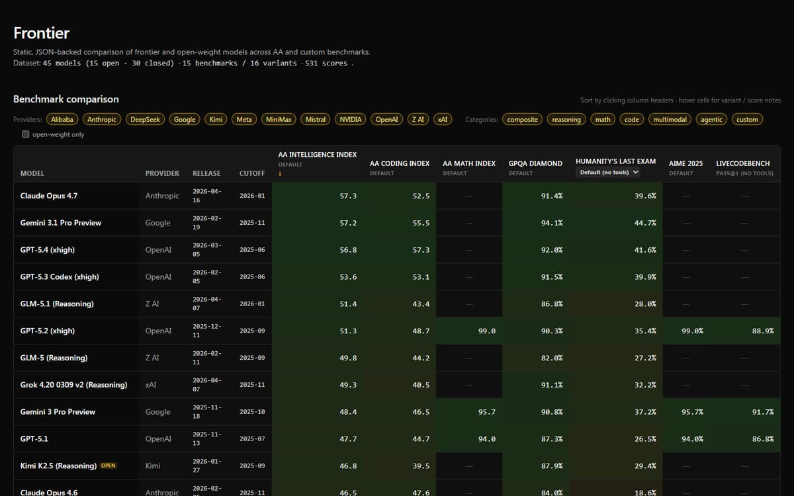
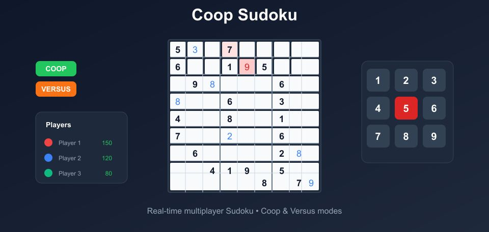

Digital products
Web apps, interfaces, data experiences, and practical systems with personality.



01 / Studio
Logge Media Forge is my creative playground: a place to turn ambitious ideas into useful tools, memorable games, and stories that move.
I’m Logge, an independent AI and media enthusiast working across code, design, games, and film. I like projects with a strong point of view and enough technical friction to make the solution interesting.
The output changes. The process does not: understand the idea, find its pulse, and keep refining until every part feels intentional.
Web apps, interfaces, data experiences, and practical systems with personality.
Multiplayer games, prototypes, mechanics, and experiments that invite participation.
Short films, aftermovies, editing, VFX, and visual storytelling with momentum.
Agents, RAG systems, model evaluation, and AI features grounded in real use.
02 / Project archive
A living archive of shipped products, games, data experiments, films, and creative detours.
Loading the project archive…
03 / Network
Loading the network…
04 / Open channel
Have an idea
with a pulse?
Tell me what you’re building, filming, automating, or imagining.
hyper.xjo@gmail.com ↗Opening channels…